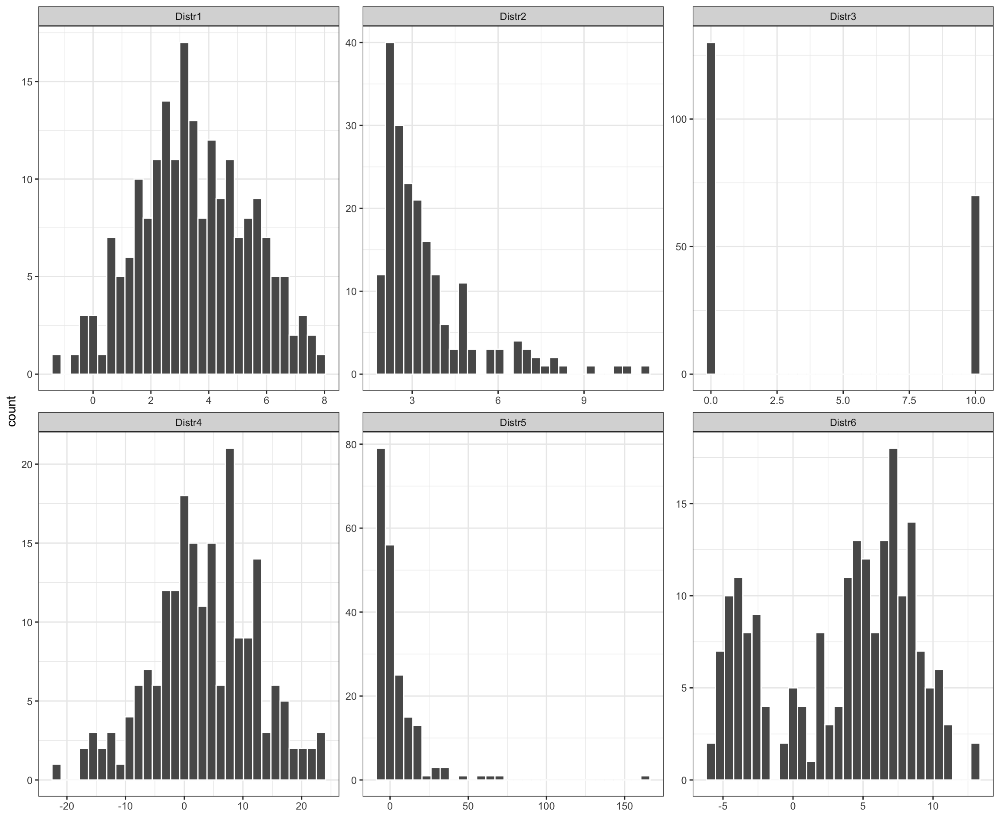

It is not always easy to get a “feeling” for a set of numerical measurements unless we summarize the data in a meaningful way. Diagrams, as shown in the previous chapter, are often a good starting point. We can further condense the information by reporting what constitutes a representative value. If we also know how widely scattered the observations are around it, we can formulate an image of data. The average is a general term for a measure of location and some common ways of calculating the average are mode, mean and median.
6.1 Mode
Mode values is the value that most common occurs across the measurements. It can be found for numerical and categorical data types.
For instance, we can find age mode value by counting how many times we observe each age value among the study participants. The mode values is the most commonly occurring one, here 63, with 9 participants being 63 at the time of the study.
Table 6.1: Top three most observed age values among the study participants.
age
n
63
9
50
6
40
5
Analogously, we can find mode value for the categorical diabetic status by counting how many of the participants are diabetic and how many are not. Here, the mode is No with 100 study participants having glycosolated hemoglobin level lower than 7.0 and 30 above.
Table 6.2: Number of times diabetic status of No and Yes is observed for the study participants.
diabetic
n
No
100
Yes
30
6.2 Median
Median value divides the ordered data values into two equally sized groups so that 50% of the values are below and 50% are above the median value. For the odd number of observations, the middle value is \((n+1)/2\)-th term of the ordered observations. For even number of observations, it is the average of the middle two terms of the ordered observations.
\[\begin{equation}
Median =
\left\{
\begin{array}{cc}
\frac{(n+1)}{2}^{th} term & \mathrm{if\ } n \mathrm{\ is\ odd} \\
\frac{1}{2}\times \left (\frac{n}{2}^{th} term + (\frac{n}{2}+1)^{th} term \right) & \mathrm{if\ } n \mathrm{\ is\ even} \\
\end{array}
\right.
\end{equation}\]
For instance, the median value for age for the first 10 study participants:
Code
age_10 <- data_diabetes %>%slice(1:10) # select first 10 participants# show age for 10 first participantsage_10 %>%select(id, age) %>%pivot_wider(names_from = id, values_from = age) %>%kbl() %>%kable_styling()
1002
1011
1016
1024
1036
1252
1253
1256
1271
1285
58
30
45
60
33
70
47
66
24
40
Age values for the first 10 study participants.
can be found by ordering observations:
Code
age_10_ordered <- data_diabetes %>%slice(1:10) %>%# select first 10 participantsarrange(age) %>%# order by agepull(age) # extract ordered age observationsdata_diabetes %>%slice(1:10) %>%# select first 10 participantsarrange(age) %>%select(id, age) %>%pivot_wider(names_from = id, values_from = age) %>%kbl() %>%kable_styling() %>%column_spec(c(5), background ="gold") %>%column_spec(c(6), background ="gold")
1271
1011
1036
1285
1016
1253
1002
1024
1256
1252
24
30
33
40
45
47
58
60
66
70
and averaging \(5^{th}\) and \(6^{th}\) term in the ordered observations giving a median value of:
1/2*(age_10_ordered[5] + age_10_ordered[6])
[1] 46
The median value for age for the first 11 study participants:
Code
age_11 <- data_diabetes %>%slice(1:11) # select first 11 participants# show age for 10 first participantsage_11 %>%select(id, age) %>%pivot_wider(names_from = id, values_from = age) %>%kbl() %>%kable_styling()
1002
1011
1016
1024
1036
1252
1253
1256
1271
1285
1301
58
30
45
60
33
70
47
66
24
40
42
Age values for the first 10 study participants.
can be found by taking \(6^{th}\) term from the ordered observations:
Code
age_11_ordered <- data_diabetes %>%slice(1:11) %>%# select first 11 participantsarrange(age) %>%# order by agepull(age) # extract ordered age observationsdata_diabetes %>%slice(1:11) %>%# select first 11 participantsarrange(age) %>%select(id, age) %>%pivot_wider(names_from = id, values_from = age) %>%kbl() %>%kable_styling() %>%column_spec(c(6), background ="gold")
1271
1011
1036
1285
1301
1016
1253
1002
1024
1256
1252
24
30
33
40
42
45
47
58
60
66
70
giving a median value of:
age_11_ordered[6]
[1] 45
Alternatively, we can use median() function to check our calculations:
The arithmetic mean, also commonly referred to as mean, is calculated by adding up all the values and diving the sum by the number of values in the data set.
Mathematically, for \(n\) observations \(x_1, x_2, \dots, x_n\), the arithmetic mean value is calculated as: \[\bar x = \frac{x_1+x_2+\dots+x_n}{n} = \frac{1}{n}\displaystyle\sum_{i=1}^n x_i \tag{6.1}\]
To calculate the arithmetic mean for BMI given our 130 study participants we can follow Equation 6.1
# calculate arithmetic mean following the equationx <- data_diabetes %>%pull(BMI) # extract BMI observationsn <-length(x) # number of observationsx.bar <-sum(x) / n # calculate meanprint(x.bar)
[1] 29.97962
BMI_mean <-round(x.bar, 2)
or use basic mean() function in R:
data_diabetes %$%mean(BMI) %>%print()
[1] 29.97962
6.4 Weighted mean
As all the values equally contribute to the calculations, the arithmetic mean value is easily affected by outliers and is distorted by skewed distributions. Sometimes, the weighted mean may be more useful, as it allows add weights to certain values of the variable of interest. We attach a weight, \(w_i\) to each of the observed values, \(x_i\), in our sample, to reflect this importance and define the weighted mean as: \[\bar{x} = \frac{w_1x_1 + w_2x_2 + \ldots + w_nx_n}{w_1 + w_2 + \ldots + w_n} = \frac{\displaystyle\sum_{i=1}^{n}w_ix_i}{\displaystyle\sum_{i=1}^{n}w_i} \tag{6.2}\]
For instance, we may be interested in knowing an average BMI value, irrespective of gender. It happens that among our study participants women are over represented:
Assuming BMI measurements for men and women should have equal influence (50/50), we can calculate weighted BMI mean to account for group sizes. We assign weights to BMI observations for men and women so that they sum up to 100. Since we have 73 measurements for women, the corresponding weights are \(w_f = 50 / 73 = 0.6849315\) and \(w_m = 50 / 57 = 0.877193\) for measurements reported for men. The weighted mean can now be calculated following Equation 6.2 and is equal to:
# number of womenn_w <- data_diabetes%>%filter(gender =="female") %>%nrow()# number of menn_m <- data_diabetes%>%filter(gender =="male") %>%nrow()# add weights to observationsdata_diabetes_addweights <- data_diabetes %>%mutate(w =ifelse(gender =="male", 50/n_m, 50/n_w)) %>%# assign weightsmutate(wx = BMI * w) # multiply weight by their weights valuesnumerator <- data_diabetes_addweights %$%sum(wx)denominator <- data_diabetes_addweights %$%sum(w)BMI_weighted_mean <- numerator / denominatorBMI_weighted_mean <- BMI_weighted_mean %>%round(2) %>%print()
[1] 29.74
We previously calculated BMI mean of 29.98 and mean BMI for men and women are:
We can note, as expected, that the weighted mean of BMI 29.74 is shifted slightly towards mean BMI for men since the BMI measurements for men have been assigned higher weights to account for women being overrepresented in the study.
6.5 Mean, median & outliers
Median is usually preferred when data has outliers as it follows from median definition that is less sensitive to outliers. On the other hand, mean value can be distorted when outliers are present. Let’s add an outlying value of age (110) to the first 11 study participants, and re-calculate mean and median.
Code
# pull age values for the first 11 study participantsage_11 <- data_diabetes %>%slice(1:11) %>%select(id, age) %>%pull(age)# add outlier value of 110age_11_with_outlier <-c(age_11, 110)# calculate mean and median, with and without outlier# without outlierage_mean_without <-mean(age_11) %>%round(2)age_median_without <-median(age_11)# with outlierage_mean_with <-mean(age_11_with_outlier) %>%round(2)age_median_with <-median(age_11_with_outlier)res <-data.frame(mean =c(age_mean_without, age_mean_with), median =c(age_median_without, age_median_with), row.names =c("without outlier", "with outlier"))res %>%kbl() %>%kable_styling()
mean
median
without outlier
46.82
45
with outlier
52.08
46
Comparision of mean and median age values before and after adding outlying age value of 110 to the first 11 study participants.
We can see that adding one outlying age value shifted mean age from 46.82 to 52.08 while median age value did not change that much with original median value being 45 and 46 after adding the outlying value.
In addition, it is good to remember that several very different distributions can still have the same mean value.

Figure 6.1: Examples of various distributions having the same mean value of 3.5
6.6 More averages
Beyond the common averages measure above, there is many more that one may encounter. The trimmed mean reduces the influence of outliers by removing a specified percentage of extreme values before calculating the mean, making it valuable in clinical trials where extreme results may skew data. The geometric mean is crucial in pharmacokinetics for calculating average rates of drug absorption or clearance, as it computes the nth root of the product of all data points. The moving average is commonly used in epidemiology to smooth out daily case reports of diseases, helping to visualize trends by averaging data points within a sliding window over time. The Hodges-Lehmann estimator, a robust statistic for central tendency, is less affected by outliers. It calculates the median of all possible averages of sample pairs, ideal for non-parametric analyses in studies where data may not be normally distributed, such as environmental exposure assessments
Trimmed Mean
\[\text{Trimmed Mean} = \frac{\sum_{i=p+1}^{n-p} x_{(i)}}{n - 2p}\] Here, \(x_{(i)}\) are the ordered observations from smallest to largest, \(n\) is the total number of observations, and \(p\) is the number of extreme values removed from each end of the dataset.
Geometric Mean\[\text{Geometric Mean (GM)} = \left(\prod_{i=1}^{n} x_i\right)^{1/n}\] The geometric mean is the nth root of the product of all \(n\) data points, \(x_i\).
Moving Average\[\text{Moving Average} = \frac{1}{k} \sum_{i=j}^{j+k-1} x_i\] This averages \(k\) consecutive data points in a series, starting from point \(j\).
Hodges-Lehmann Estimator\[\text{Hodges-Lehmann Estimator} = \text{Median} \left( \frac{x_i + x_j}{2} \right)\] This estimator is calculated by taking all possible pairs \((x_i, x_j)\) of sample observations, computing their average, and then finding the median of these averages.